Directory
Contents
Emotion into motion. Breath, stillness, and intentional motion translating colour and mood into physical language.
- Volume
- I — collected work, 2021–2026
- Reading
- Arrow keys turn the spread. Any plate opens full size.
Chapter I
Stills
Frames pulled from the roll — a body learning its own shape in the dark, and in the field.
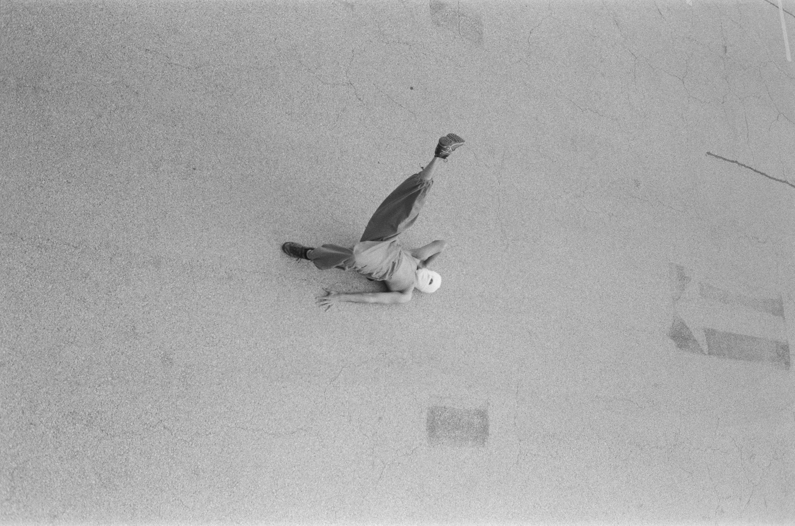
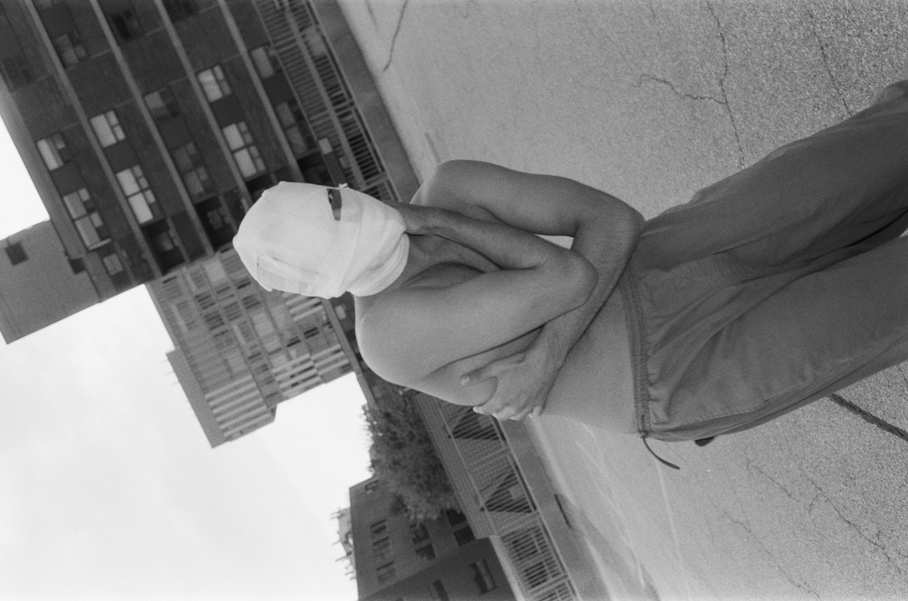
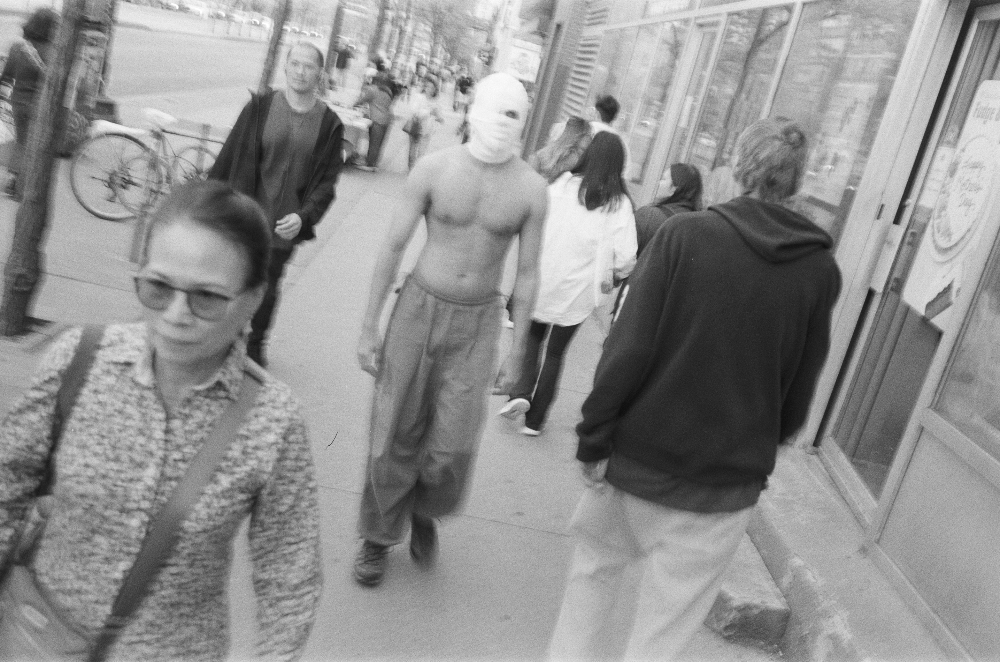
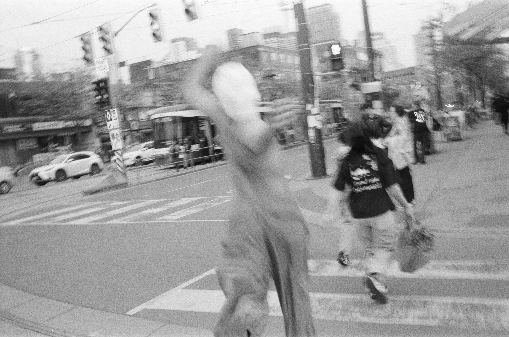
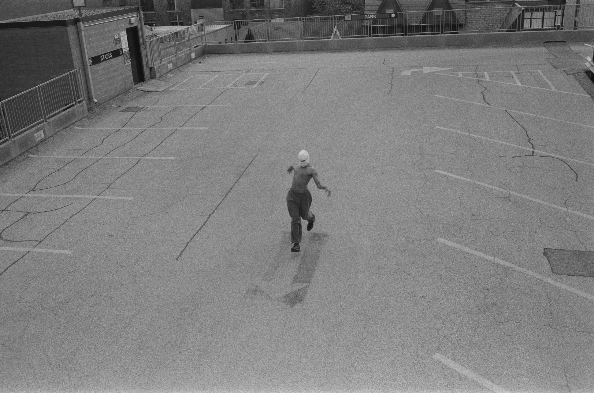
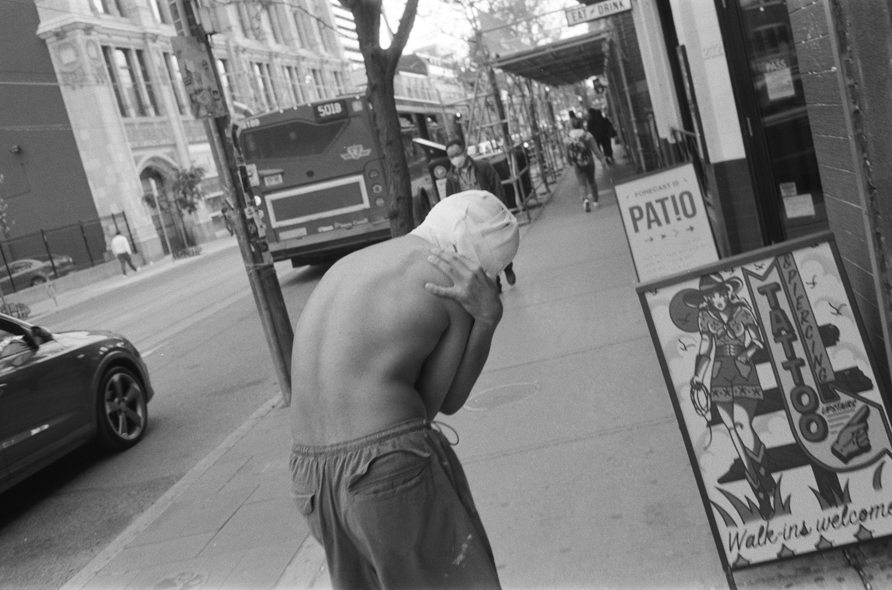
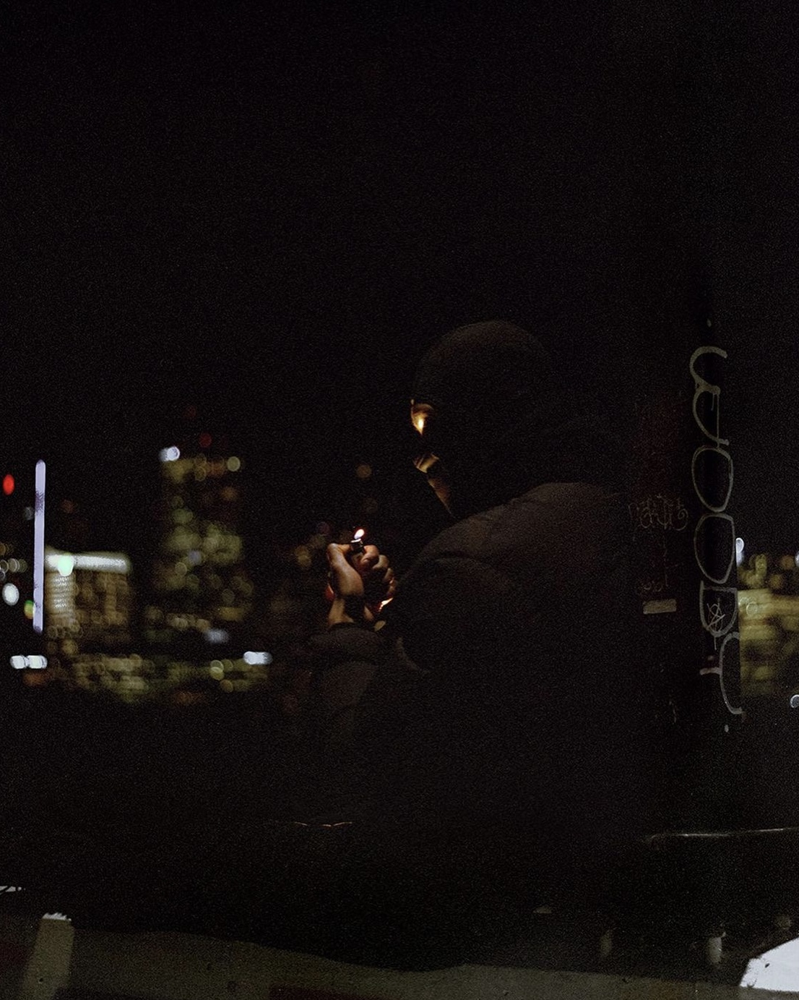


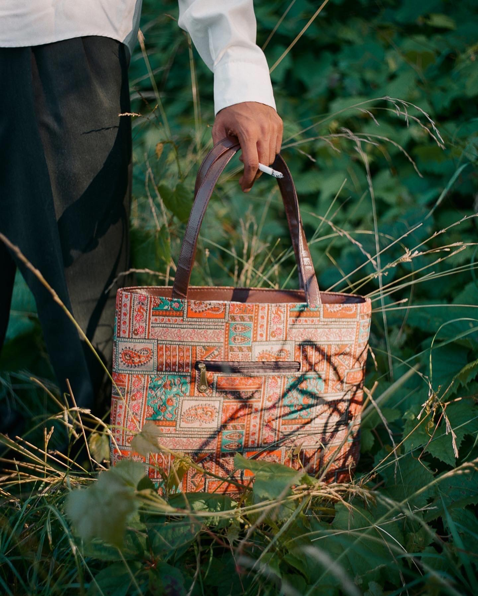


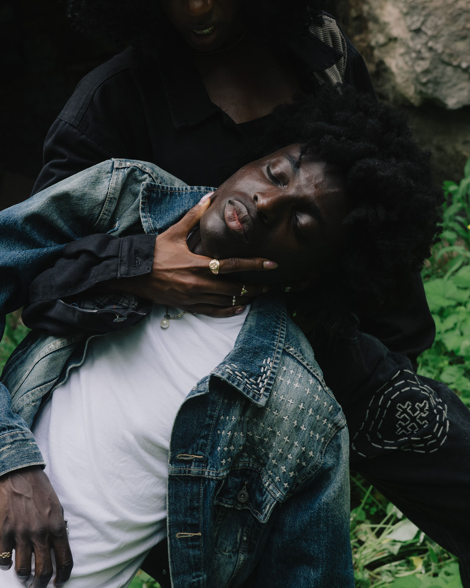
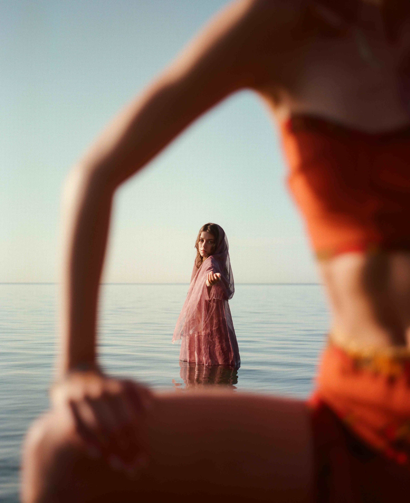


Chapter II
Videos
Choreography for stage, camera, and commercial work. Each plate opens on YouTube.


Chapter III
Films
Movement direction for camera.
- I
- I can't cross my legs, can you? dir. Thiha Min Zin
- II
- Palika's BFA Thesis Collection Parsons · @dialective.xyz
- III
- Masked Man

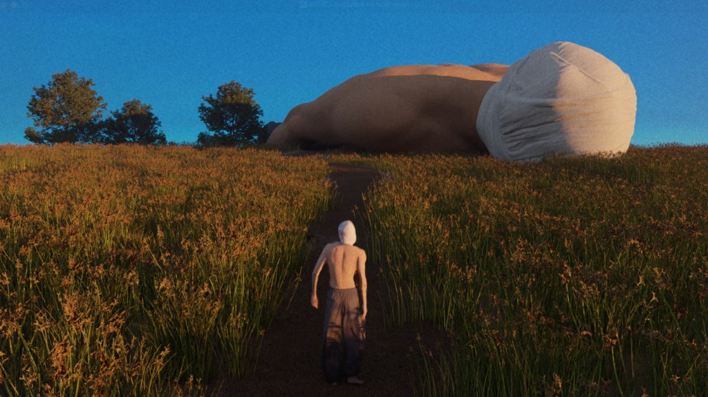
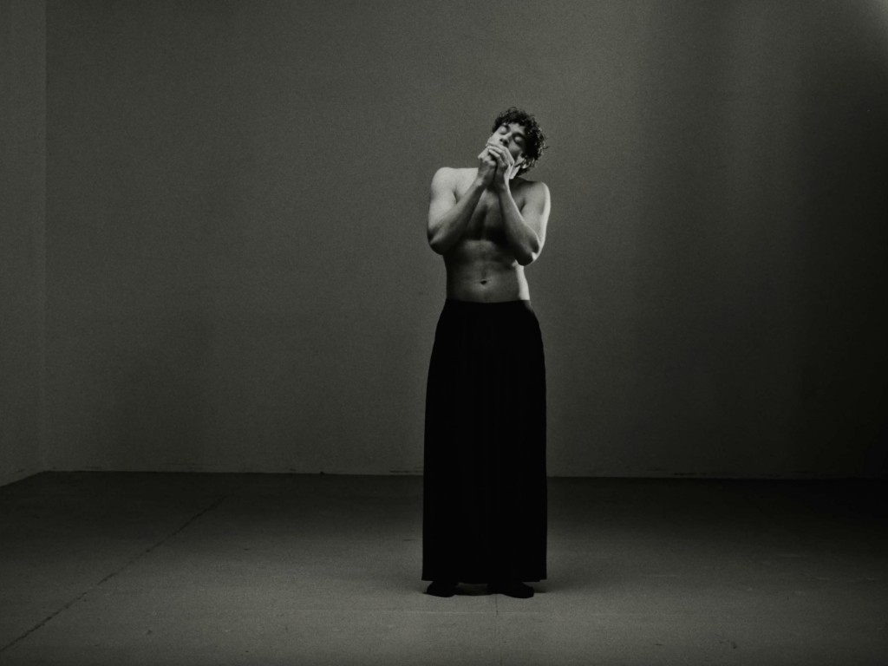
Chapter IV
Methodology
I build movement from a foundation of mindfulness and presence. Through breath, stillness, and intentional motion, I translate colour, mood, and abstract ideas into physical language.
My work often explores emotional extremes — using striking shapes and intense physicality to create a visceral connection with the audience. I aim to blur the line between choreography and instinct, crafting moments that feel raw, honest, and deeply human.
My mission is to turn emotion into motion: creating spaces where structure fades and pure feeling remains.
- Beginnings
- Trained in hip-hop, street styles, qi gong, and contemporary dance — a holistic approach weaving breathwork, visualization, and method acting.
- Experimenting
- New local music that inspires a continual flow in movement, one with no stops — spotify: broomnyc.
- Previously
- Co-created Forest, a live interpretive stage show on the deterioration of the planet — earth, air, water, fire. With Kinaj and Shameka Blake.
- Now
- Capturing meaningful stories through film, and engaging a community of mindful movers and storytellers.
Colophon
Contact
- @tanjot.p
- YouTube
- Tanjot Panesar
- Representation
- da Costa Talent — Frank Da Costa
- Based
- New York, US
Zephyr — Volume I Tanjot Panesar. Set in Lora and Inter. Plates by Akash Tucker, Gabe Galedo, Andrew Ye, and others.
fin